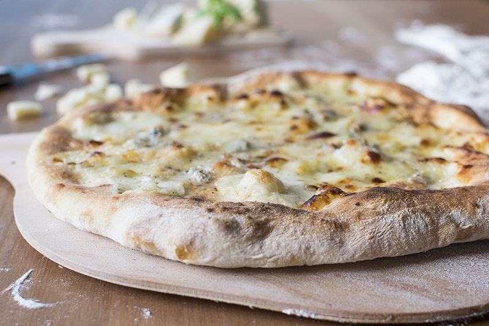

The first step is making the pizza dough which is then rolled out into a round and topped with four different kinds of cheese. Besides mozzarella, the three remaining types of cheese are a matter of personal preference. However, Parmigiano-Reggiano, provolone, and Fontina cheese are most commonly used. Alternatively, quattro formaggi may also include tomatoes, especially in northern Italy where they also like to add Gorgonzola to the topping.
Add the flour and the dry baker's yeast to a large bowl — mix them together so they brewer's yeast is evenly dispersed in the flour. Meanwhile, dissolve the malt in warm water, add it to the bowl with the flour, together with olive oil and salt. Knead by hand until you get a smooth dough. Place the dough in a greased bowl, then cover it with cling film and store it in a warm spot for 3-4 hours, or until tripled in volume. Once risen, divide the dough in half, shape each half in a ball, roll them out into discs on a floured surface, then place each in a non-stick tray and let them rise for another hour.
Once an hour has passed, sprinkle the pizza base with the four cheeses and black pepper. Bake in a 250°C/480°F oven, with the grill option turned on, for 15 minutes, until the pizza's edges are golden and its bottom dry. Once baked, serve immediately.